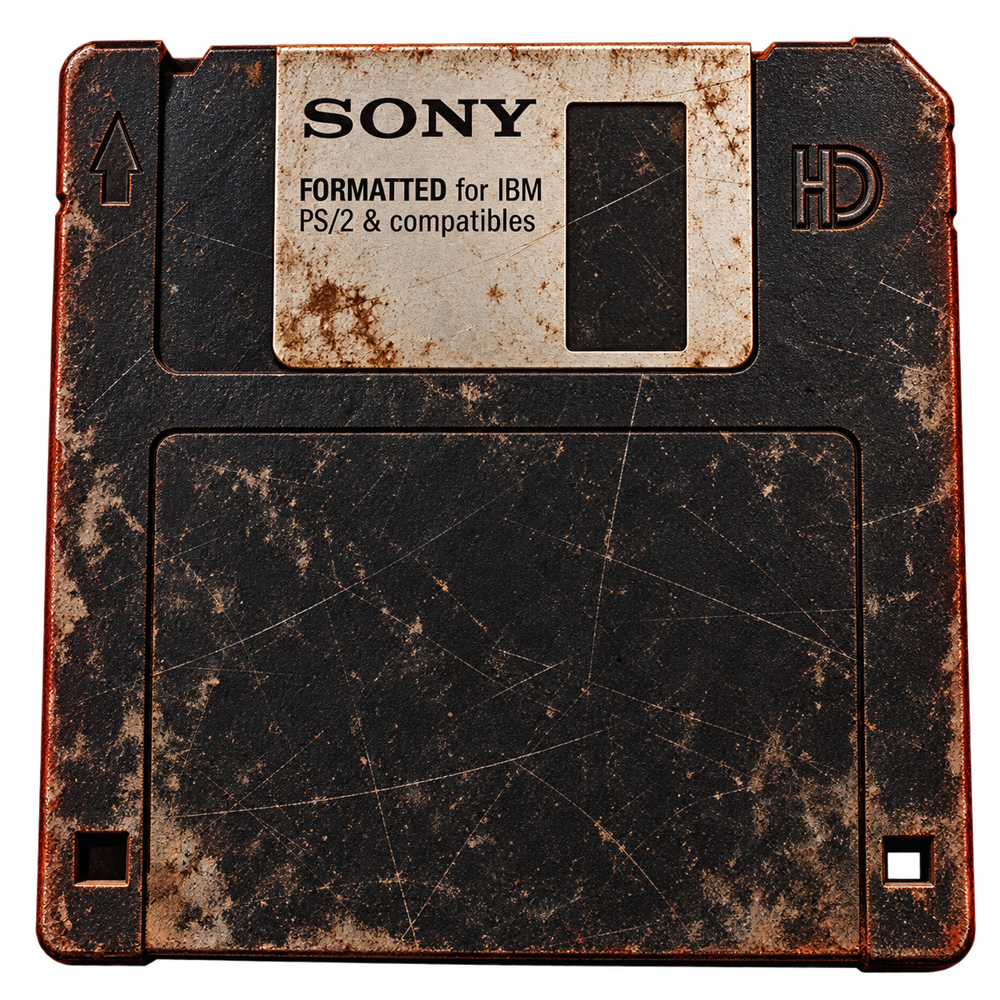

2 de noviembre de 1988
El gusano Morris
En 1988, un experimento informático se convirtió en una epidemia digital. El gusano Morris se propagó sin control, infectando miles de ordenadores y paralizando numerosos sistemas.
El museo conserva un disquete que supuestamente contiene una copia del programa original. Los técnicos aseguran haberlo eliminado cientos de veces.
Dicen que este disquete sigue creando copias de sí mismo.